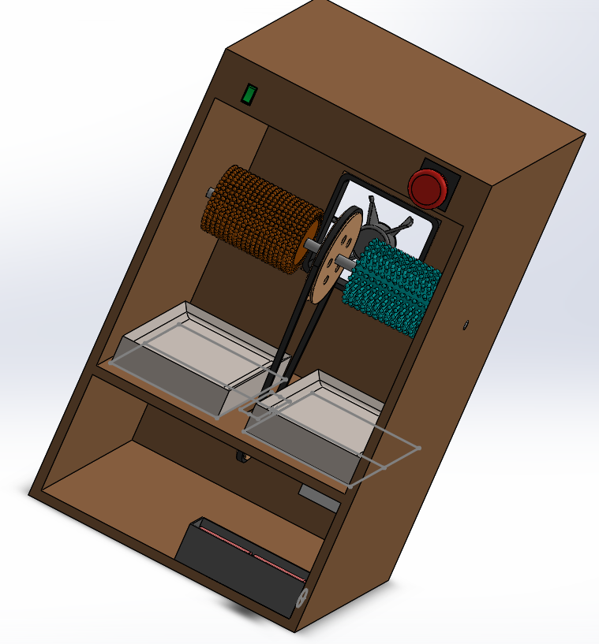
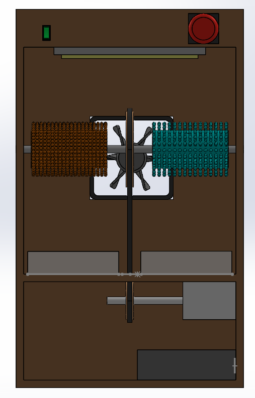
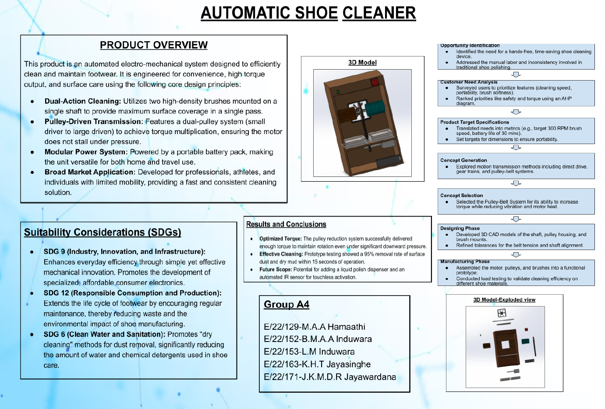
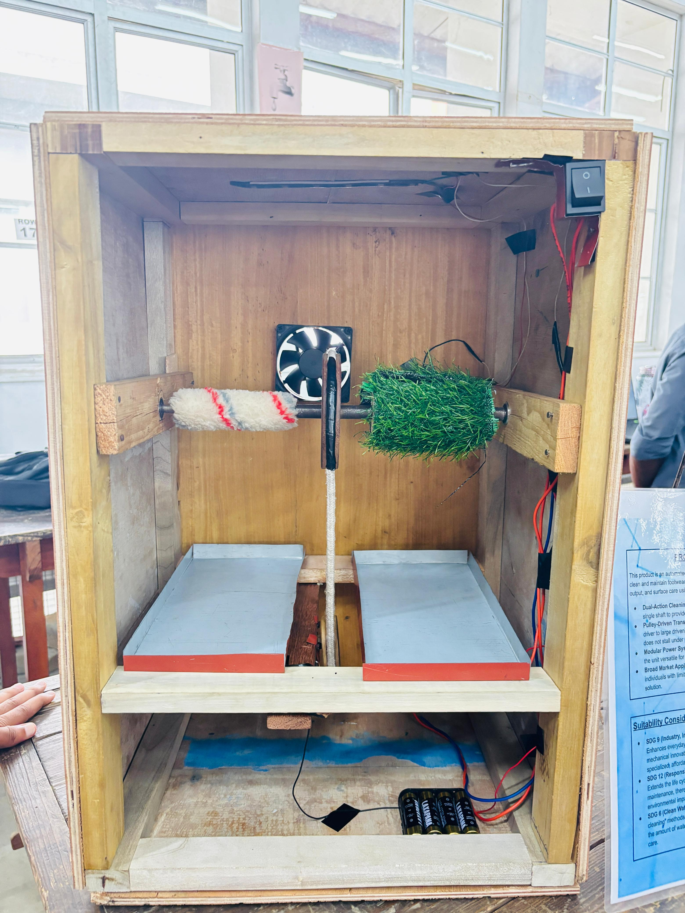

Assembly View 01
SolidWorks assembly view of the automatic shoe cleaner.
MECHANICAL DESIGN & PRODUCT DEVELOPMENT
A mechanical engineering project involving customer-need analysis, concept development, Quality Function Deployment (QFD), SolidWorks modelling and prototype development.

The Automatic Shoe Cleaner project focused on developing a mechanical system for cleaning and polishing shoes. The project combined customer-need analysis, concept generation, QFD, CAD modelling and prototype development. The design process helped translate user requirements into engineering features and a developed mechanical assembly.
Concept development was carried out to explore possible design solutions before progressing with the selected concept.
QFD was used to connect customer requirements with technical design characteristics. This helped the team consider user expectations and convert them into engineering considerations during product development.
The selected design was developed using SolidWorks. The assembly models communicate the arrangement of the main components and the overall mechanical design.
SolidWorks assembly view of the automatic shoe cleaner.

Additional view of the developed mechanical assembly.
The project poster presents the product idea, development process and main aspects of the proposed system.

A physical prototype was developed to demonstrate the proposed design and support practical evaluation of the system.
